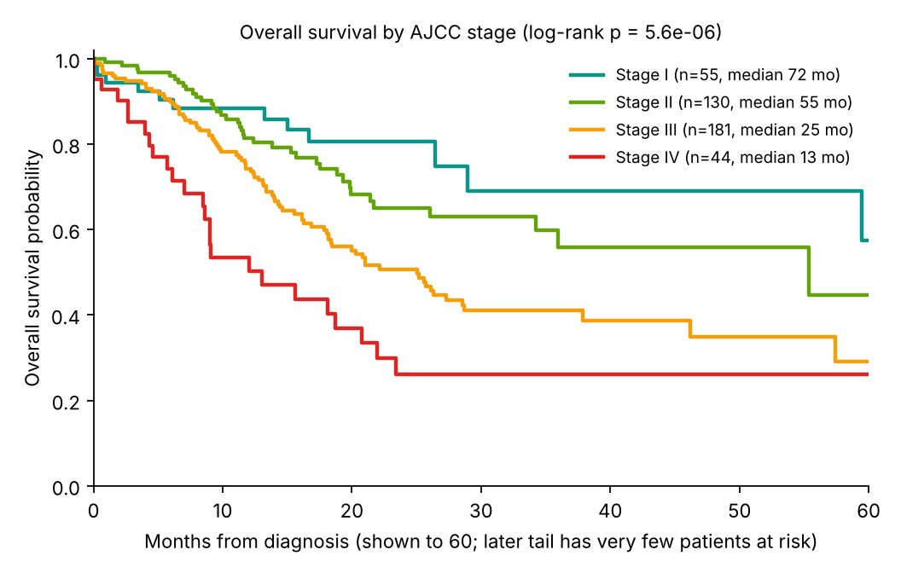
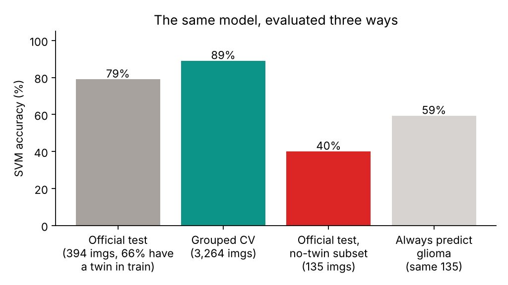

Work you can open, run and check
Seven projects in health data science, medical imaging and machine learning. Four have live demos that run in your browser; all have code on GitHub.

Stomach Cancer Survival
Kaplan-Meier, log-rank and a multivariable Cox model written from scratch and verified on simulated data, on 443 patients.
Stage IV HR 5.2 · recurrence not predictable (AUC about 0.5)

Brain MRI Leakage Audit
Classical features with SVM, Random Forest and Logistic Regression on 3,264 MRIs, plus an audit of the public train/test split.
66% of the official test set had a twin in training

Urban Health Access
SQL preparation, nonparametric tests with effect sizes, logistic regression with bootstrap intervals and an interactive dashboard.
Hospital recorded in 88% of high-income vs 36% of low-income centres

Who Pays for Health Care?
SQL-first pipeline over WHO and World Bank data with bootstrap intervals, clustering and an Ireland vs EU27 view.
Out-of-pocket share falls as compulsory financing rises (rho -0.84)
Pneumonia from Chest X-rays
Rebuilds the public split by patient before training, then reports AUROC, sensitivity and specificity with patient-level intervals.
Patient-disjoint split, Grad-CAM checks, bootstrap CIs
Knee Osteoarthritis Grading
Fine-tunes ResNet-50 and tests whether GLCM texture features add anything on top of CNN embeddings.
CNN vs texture features vs fused, scored by weighted kappa
ERBB2 Breast Cancer Expression
Compares ERBB2-amplified with non-amplified breast tumours using RNA-seq, copy-number and clinical data.
DESeq2, pathway enrichment and penalised Cox in R